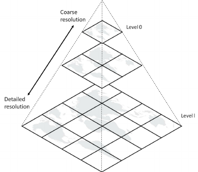
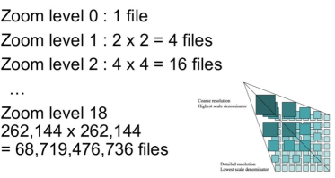
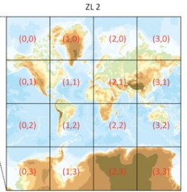
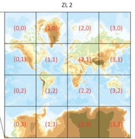

Introduccion a vector tiles
Introducción a Vector Tiles y Mapbox (I)
Vector Tiles es un formato para almacenar datos geográficos en formato binario (Google Protobuf) y pensados para la visualización en navegadores web modernos que soporten webGL.
Una tesela vectorial (vector tiles) contiene datos vectoriales georreferenciados (puede contener múltiples capas), recortados en teselas para facilitar su recuperación. Son equivalentes a las teselas raster tradicionales (XYZ,WMTS, TMS) pero retornan datos vectoriales en lugar de una imagen.
Cada conjunto de teselas vectoriales tiene su propio esquema. Un esquema consiste en nombres de capas, atributos, selección de elementos.
Contexto
En 2005 GoogleMaps introdujo una "nueva" forma de mostrar datos geográficos por la web, pregenerando el mapa por niveles de zoom y tiles (teselas) de 256x256 pixeles.
También creó una nueva proyección basada en mercator, llamada pseude-mercator o web mercator, cuyo código EPSG es 3857
 
Después de GoogleMaps, otros proveedores o plataformas cómo OpenStreetMap siguen esta misma forma de organizar la geoinformación.
HTTP
Para cargar la imágenes se ulitza una llamada HTTP rest dónde se especifica;
https://.../.../z/x/y.format
Z= Nivel de zoom
X=coordenada X
Y=coordenada Y
Formato
Raster: Imágen png o JPEG
Vector: (pbf o mvt)

Protocolos
Existen tres especificaciones para servir tiles
-
TMS (Tile Map Service): X Y coordenadas empiezan de debajo izquierda (típico eje cartesiano de coordenadas)
-
WMTS (Web Map Tile Service): OGC estandard , corrdenadas empiezan de arriba izquierda.
-
ZXY o "slippy map": Igual que TMS pero la Y empieza por arriba izquierda
 

Caracteristicas
Las teselas vectoriales han sido utilizadas por el cliente Android de Google Maps desde diciembre de 2010 y en el cliente de escritorio desde 2013. Las teselas vectoriales para renderizar los datos de OpenStreetMap se propusieron por primera vez en marzo de 2013 y están soportadas por Mapnik, el renderizador de datos de OpenStreetMap más utilizado. Mapbox, proveedor comercial de herramientas de cartografía personalizada y de hosting, es el máxini impulsor de esta tecnologia y ha centrado su herramienta de cartografía, Mapbox Studio, en torno a las teselas vectoriales.
- Cada tile es un contenedor de datos vectores y atributos
- Los Tiles no tienen estilo, el estilo se aplica en cliente
- Soporta rotación y orientación
- Soporta extrusión y 3D
Herramientas y recursos
Fuente: https://github.com/mapbox/awesome-vector-tiles
Parsers & Generators
- vector-tile-js - Parses vector tiles with JavaScript.
- mapnik-vector-tile - C++ vector tile read/write implementation on top of Mapnik.
- mbtiles-cpp - C++ library for decoding of mbtiles and vector data into function callbacks.
- vector-tile-py - Python tool to convert a Mapnik vector tile to GeoJSON
- node-mapnik - Node.js API for vector tiles which depends on
mapnik-vector-tile - vector-tile-cs - Parses vector tiles with C# (native C# implementation, no dependencies).
- mapbox-vector-tile-cs - Parses vector tiles with C# (uses protobuf-net).
- tilelive-bridge - Implements Tilelive API for creating vector tiles from traditional Mapnik datasources in Node.js.
- tilelive-vector - Implements Tilelive API for reading vector tiles and rendering to image tiles in Node.js.
- mapbox-vector-tile is a Python package for vector tile encoding. Used in Mapzen's vector tile service tileserver and TileStache. :warning: Only support V1 Tile spec and not V2, no longer maintained
- geojson-vt - Slice GeoJSON into vector tiles on the fly in the browser.
- java-vector-tile - A java encoder and decoder for vector tiles.
- mapbox-vector-tile-java - Encode and decode v2.1 Mapbox Vector Tiles. Convert JTS Geometry to and from MVT features, including simple user data support. Utility functions for converting world coordinates to MVT coordinates and clipping to a tile envelope.
- cached-vector-tile - An alternative implementation of the vector-tile-js interface, backed by plain JS objects/arrays rather than parsed-on-demand protobuf data. Trades away memory efficiency for faster feature.loadGeometry() calls.
- tilegrinder - A helper library for applying a data altering function on each vector tile in an MBTiles, using the native protobuf wrapper for de- and encoding, recompressing the results and storing them either in an MBTiles or as single files.
- SwiftVectorTiles - A Swift encoder for vector tiles according to the Mapbox vector tile spec.
- orb - A Go geometry library with mvt <-> geojson support.
Clients
- Mapbox GL Native - C++/OpenGL vector maps library with native SDKs for Android, iOS, Node.js, macOS, and Qt
- Mapbox GL JS - JavaScript/WebGL vector maps library.
- OpenLayers 3 - JavaScript vector & raster library.
- WhirlyGlobe/Maply - Objective C code that is able to read and render vector tiles(and style with mapnik xml) on iOS devices.
- Leaflet.MapboxVectorTile is able to read PBF MapboxVectorTiles from a REST endpoint and render them as a TileLayer on a Leaflet Map. Use this option if you want to utilize vector tiles on a standard Leaflet web map without needing WebGL.
- CARTO Mobile SDK - C++ maps library focused on offline features, for iOS, Android, Windows Phone and Xamarin with bindings for Java, Objective-C and C#. Based on Nutiteq Maps SDK, but open source and uses CartoCSS.
- Mapzen Tangram - JavaScript library for rendering 2D & 3D maps live in a web browser with WebGL, supports MVT, GeoJSON, TopoJSON
- Mapzen Tangram-es - C++ library for rendering 2D and 3D maps using OpenGL ES 2 with custom styling and interactions
- mapbox-gl-leaflet - Create Mapbox GL layers in Leaflet
- react-native-mapbox-gl - Render Mapbox GL maps from React applications
- hoverboard - Render vector tiles on canvas with Leaflet 0.7.x (supports GeoJSON, TopoJSON, and protobuf) :warning: no longer maintained
- Leaflet.VectorGrid - Display gridded vector data (sliced GeoJSON, TopoJSON or Mapbox Vector Tiles) in Leaflet 1.0.0
- ArcGIS API for JavaScript - Draw vector tile layers as part of your web map. Rendering done via
mapbox-gl-jsintegration. - mapscii - A Vector Tile to Braille and ASCII renderer for xterm-compatible terminals
- Unofficial Mapbox GL Native bindings for Qt QML - Qt QML bindings for Qt 5.6 and higher.
- Mapbox-vector-tiles-basic-js-renderer - A fork of mapbox-gl-js giving you full control over rendering of specific tiles, also provides vector tile overlay for google maps.
Applications / Command line tools
- Mapbox Studio - Web design studio for creating and styling vector tiles.
- Mapbox Studio Classic - Desktop design studio for both creating vector tiles from raw geodata and for rendering them on-the-fly into image tiles. Internally uses
tilelive.jsmodules to handle vector tiles (seetilelive-bridgeandtilelive-vector) :warning: use Mapbox Studio instead. - kosmtik - Design maps with CartoCSS and Mapnik.
- ArcGIS Pro - Generate vector tiles from maps authored in ArcGIS Pro or imported from ArcMap.
- MVT Styler - map style editor for vector tiles.
- Maputnik - A visual style editor for the Mapbox GL style specification.
- QGIS Vector Tiles Reader - QGIS Python plugin which reads Mapbox Vector Tiles from local MBTiles file or remote
- mapbox-gl-inspect - Plugin for Mapbox GL JS to view the view and inspect VT features.
CLI Utilities
- mbview - Watch MBTiles in your localhost. View tiles in a basic Mapbox GL JS webapp locally
- tippecanoe - Build vector tilesets from large collections of GeoJSON features.
- tilemaker - Command line tool to produce vector tiles directly from an .osm.pbf extract without an intermediate database.
- mapbox-filter - Filter MBTiles according to Mapbox GL JS styles, shrink MBTiles directly, serve locally over http, publish to S3-compatibile storage
- vector-tiles-producer Command line tool in C++ to creates vector tiles for a given area at chosen zoom levels using a Mapnik XML. :warning: no longer maintained
- vt-geojson - decodes vector tiles to GeoJSON FeatureCollections
- tl - An alternate command line interface to tilelive
- tileshrink - Reduce the layer extent and simplify the resulting geometries of all vector tiles in an MBTiles
- tiler @GeoVation - Command line tool for converting GeoJSON, Shapefiles or PostGIS layer to raw Vector Tiles (or MBTiles)
- tiler @thomersch - Command line tool to convert GeoJSON to Vector Tiles (written in Go language).
- geojson2mvt - npm package for building a static vector tile tree for given xyz bounds from a geojson file (uses geojson-vt)
- OGR MVT and MBTiles - The GDAL/OGR MVT and MBTILES drivers can be used to read and write vector tiles, respectively as tileset on the filesystem or in a mbtiles container (GDAL >= 2.3.0)
- MBUtil - Import and export MBTiles to disk :warning: no longer maintained
- Datamaps C application that can be used to create vector tiles and store them in an mbtiles. See the
render-vectorcommand. :warning: no longer maintained, use tippecanoe instead
Mapbox GL JS Plugins
- gl-draw - Adds support for drawing and editing features on Mapbox GL JS maps
Servers
- tessera - Supports serving and rendering vector tiles. Uses the same core libraries as Mapbox Studio.
- tessella - lightweight Node.js Mapbox Vector Tiles server. Inspired by tessera.
- tilestrata - with tilestrata-vt, it can generate Mapnik Vector Tiles; with tilestrata-postgismvt, it can serve Mapbox Vector Tiles from a PostGIS db
- Utilery Server to generate vector tiles from PostGIS queries. Python based :warning: no longer maintained
- tileserver Mapzen Vector Tile Service.
- TileStache added support for Mapbox Vector tiles via .pbf extension requests.
- Kartotherian Wikipedia tile server with Tilerator backend tile pre-generator
- ArcGIS Online - Supports serving vector tiles and rendering in the mapping application powered by the ArcGIS API for JavaScript
- Portal for ArcGIS - Supports serving vector tiles and rendering in the mapping application powered by the ArcGIS API for JavaScript
- tilesplash - A light and quick nodejs webserver for serving topojson or mapbox vector tiles from a postgis backend
- go-vtile-example - An example server written in Go
- Tegola - A MVT server written in pure Go that supports serving tiles from a PostGIS data provider.
- t-rex - MVT server in a single executable written in Rust. Serves tiles from PostGIS supporting custom tile grids.
- OSM Scout Server - Maps server providing vector and raster tiles, geocoder, and router. Designed to be used on Linux (mobile and PC) to provide offline maps; written in C++
- postserve - A small Python based tileserver using ST_AsMVT and ST_AsMVTGeom to generate vector tiles on the fly. Designed for use with PostGIS 2.4 and the OpenMapTiles project
- SpatialServer (PGRestAPI) - A multi-purpose GeoSpatial NodeJS web server created at SpatialDev that not only serves MBTiles stuffed with vector tiles, it can also cut vector tiles on the fly from a PostGIS database. :warning: No longer maintained.
- OpenMapTiles - Set of open-source tools for self-hosting of OpenStreetMap maps in more than 50 languages. It provides both raster as well as vector tiles, WMS and WMTS services for GIS programs, support for JavaScript viewers and mobile SDK.
- Hastile - Haskell web server using PostGIS to deliver vector tiles.
- MapServer - Open Source platform for publishing spatial data and interactive mapping applications to the web. MVT output available in 7.2
Low-level utilities
- vt-pbf serialize JavaScript objects representing vector tiles into binary Protocol Buffer encodings of vector tiles
- vtzero - minimalist vector tile decoder and encoder in C++
- mvt-fixtures - a suite of valid and invalid test fixtures according to the Mapbox Vector Tile spec versions. Includes simplified unit test fixtures and real-world fixtures to test your encoders and decoders.
- zellige - command line utility written to convert GeoJSON to MVT.
- mapbox-gl-function - Mapbox GL style function evaluator :warning: now maintained as party of mapbox-gl-js
- mapbox-gl-filter-simplify - Simplifies and complexifies filters in Mapbox GL Styles :warning: removed
Articles
- Vector tiles remixed - guide to using tilemaker to generating vector tiles
- Build Your Own Static Vector Tile Pipeline - guide transforming, encoding and hosting tiles in the cloud; using ogr2ogr + tippecanoe + Mapbox GL JS
- Using the new MVT function in PostGIS - Building a vector tile service with PostGIS, express, and pg-promise.
License